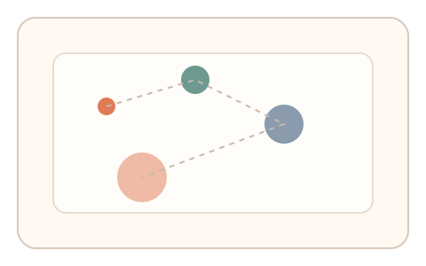
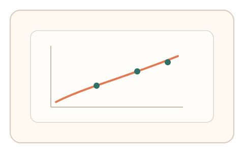

#9
生物肌肉与鼠标运动
已扩展
Fitts 定律挑战
通过一组不同大小与距离的目标点击，验证移动时间与难度指数是否符合人类 Fitts 定律曲线。
概念原文
连续出现不同大小/距离的目标点，记录完成时间与难度指数关系是否符合 Fitts 定律。人类轨迹对难度的时间响应具有稳定函数关系。
以“运动时间规律性”作为人机差异，而非识别准确率。
研究背景
Fitts 定律描述了目标大小与距离对移动时间的影响，是人机交互中广泛验证的速度‑精度权衡规律。以该规律为基础，验证码可检验操控行为是否呈现人类稳定的时间‑难度函数，而非单次命中是否正确。
核心机制
- 生成一组不同大小/距离的目标，构成不同难度指数。
- 记录每次移动时间、轨迹与误差，并计算难度‑时间关系。
- 将用户的曲线与人类典型函数区间进行比对。
- 允许一定噪声，强调曲线形态与趋势一致性。
用户流程
- 步骤 1：用户进入目标序列任务，依次点击出现的圆点。
- 步骤 2：系统记录每次移动时间、轨迹长度与误差。
- 步骤 3：系统计算难度指数曲线并完成判定。
判定信号
移动时间与难度指数（ID）相关性
人类表现符合稳定的速度‑精度权衡规律。
末端减速与微调轨迹
真实操控通常呈现“快‑慢”双阶段轨迹。
判定逻辑
计算 ID‑时间曲线的拟合度与斜率区间；若出现“极快且精准”或“曲线异常平坦”，则判定为异常；结合末端微调波形进行二次校验。
对抗面
- 脚本基于 Fitts 模型生成伪造曲线
- 重放已采集的人类轨迹序列
防御与缓解
- 动态改变目标序列与布局，降低重放可复用性
- 加入轻微摩擦/延迟扰动，检测适应过程
- 联合轨迹微抖动与过冲回拉等二级信号
可达性与风险
提供更大目标与更宽容的时间窗口；为键盘或触控用户提供等效的“步进式”目标选择。
- 输入设备差异（触控板/鼠标）导致曲线偏移
- 高延迟或系统负载可能扭曲时间统计
可视化状态

状态 1：目标序列
不同大小与距离的目标依次出现，构成难度梯度。

状态 2：轨迹与时间采集
记录每次移动时间与末端微调轨迹。

状态 3：曲线拟合
计算难度指数与移动时间的函数关系。
参考资料
Fitts's law
描述目标大小/距离与移动时间的关系。